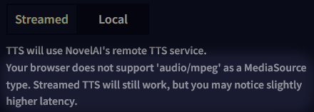
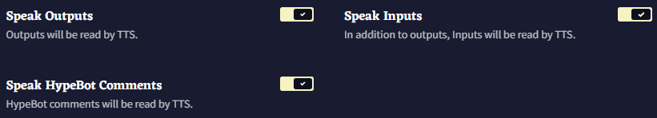
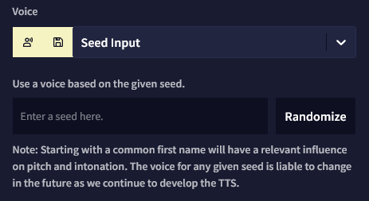
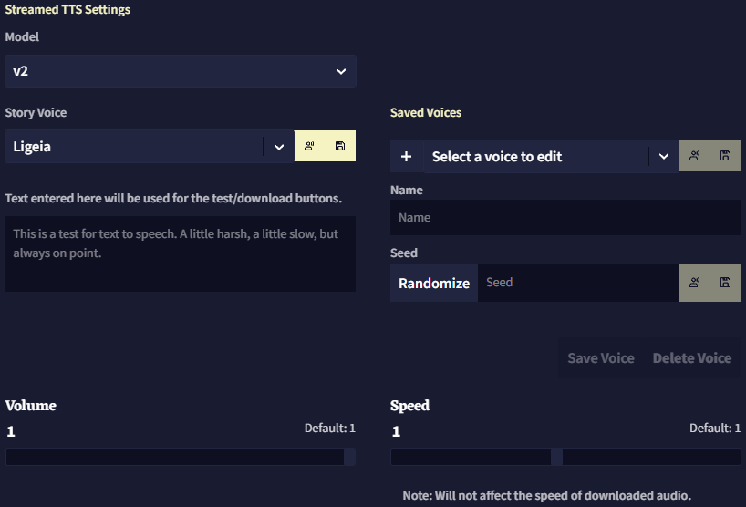

Text To Speech
Text to Speech (TTS) 탭을 통해 로컬 TTS와 NovelAI의 스트리밍 TTS 기술을 설정하고 사용하여 사용자가 작성한 텍스트를 음성으로 읽게 할 수 있습니다.
Text to Speech Source
가장 먼저해야 할 일은 Streamed를 사용 할지, Local TTS를 사용 할지를 고르는 것입니다.

Streamed: 음성 대사line를 생성하기 위해 NovelAI의 원격 TTS 서비스를 사용합니다. 이 옵션은 더 나은 품질과 커스터마이징된 기능을 제공하지만 유료 구독을 활성화해야 합니다(무료 트라이얼에서는 100개의 음성 대사line 생성이 제공됨).
Local: 브라우저의 텍스트 합성 기능을 사용합니다. 사용하는 로컬 TTS 도구에 따라 품질이 달라지며 NovelAI의 TTS 모델 기능은 사용할 수 없습니다.
Streamed TTS에 관한 참고사항: 일부 인터넷 브라우저에는 가능한 빨리 재생할 수 있는 기능이 없습니다. 그러므로 브라우저에 따라서, 음성 대사가 약간 늦게 생성될 수도 었습니다. 해당 문제는 Streamed TTS를 선택할 때 아래와 같은 경고가 표시되는 것을 통해 알 수 있습니다.
Automatic Speech Options
다음으로, NovelAI가 특정 텍스트에 대해 언제 자동으로 TTS를 활성화할 것인지를 선택할 수 있습니다.

Speak Outputs: 이 옵션을 활성화하면 사용자가 Send를 클릭할 때, AI는 항상 텍스트에 대한 음성을 생성합니다.
Speak Inputs: 이 옵션을 활성화하면 사용자가 Send를 클릭할 때, AI는 생성되는 출력 앞에 사용자가 작성한 새 입력(기본 테마에서 파란색 텍스트)에 대한 음성도 생성합니다. Speak Outputs이 비활성화되어 있다면 아무런 효과가 없습니다.
Speak HypeBot Comments: 이 옵션을 활성화하면 Hypebot 코멘트가 생성된 뒤에 Hypebot 코멘트의 음성이 생성됩니다.
여러 자동 음성 옵션을 선택하면, 가장 먼저 사용자의 입력을 읽고 그 후에 AI의 출력을, 그리고 Hypebot의 코멘트를 읽습니다.
Editor에서 마우스 오른쪽 버튼을 클릭하여 필요할 때 원하는 텍스트에 대한 TTS를 생성할 수도 있습니다.

이 옵션을 클릭하여 기본적으로 설정된 음성 대사를 바로 생성하거나, 화살표를 클릭하여 다른 모든 목소리를 사용할 수도 있습니다.  아이콘을 클릭하면 해당 음성 대사를 재생하는 것 대신, 음성을 파일로 다운로드할 수 있습니다.
아이콘을 클릭하면 해당 음성 대사를 재생하는 것 대신, 음성을 파일로 다운로드할 수 있습니다.
Streamed TTS Settings
Model
Streamed TTS에는 TTS v1과 TTS v2, 이렇게 두 개의 옵션이 있습니다. TTS v1은 TTS v2에 비해 약간 구형이고 기능은 적습니다만 간단합니다. 음성 사운드를 더 세밀하게 조절하고 싶다면, v2를 권장합니다.
v1과 v2 모두  버튼을 눌러 선택한 음성을 즉시 재생할 수 있으며, 버튼을 누르면 음성 대사가 담긴 사운드 파일을 다운로드할 수 있습니다.
버튼을 눌러 선택한 음성을 즉시 재생할 수 있으며, 버튼을 누르면 음성 대사가 담긴 사운드 파일을 다운로드할 수 있습니다.
v1 Settings

v1의 경우 기본 음성 중에 하나를 선택하거나 커스텀 seed를 넣을 수 있습니다. 오른쪽의 텍스트 필드를 사용하여 음성을 테스트할 텍스트를 입력할 수 있습니다.
드롭다운 리스트에서 가장 마지막 음성 옵션인 'Custom Seed' 를 선택하면, 기본 음성 대신 다른 음성을 사용하기 위한 문자열을 입력할 수 있습니다. Randomize 버튼을 클릭하면 임의의 seed가 입력됩니다. 보통의 이름first name을 사용하면 TTS AI의 음높이와 억양에 확연하게 영향을 미치는 경향이 있습니다. 예를 들어, seed에 Maria라고 입력하면 여성스러운 목소리가 나옵니다.
마지막의 슬라이더를 각각 조절하여 음성 대사를 읽는 Volume과 Speed를 변경할 수 있습니다. Volume 설정은 기본적으로 최대로 설정되어 있으며 Speed 설정은 다운로드된 사운드 파일에는 영향을 미치지 않는다는 사실을 염두에 두십시오.
v2 Settings

v2는 더 최신의 강력한 TTS AI이기 때문에 둘러볼 수 있는 더 많은 옵션과 기능이 있습니다.
v1과 차별화되는 첫번째 기능은 더 크고 더 많은 기본 목소리 라이브러리가 있다는 것 외에도, seed를 사용하여 "제작"한 새 목소리를 "custom default" 로 저장하여 나중에 쉽게 선택하고 수정할 수 있다는 것입니다.
게다가 v2는 더욱 심층적인 seed 시스템이 있어, 특수한 seed 구문을 사용하여 다양한 seed들을 믹스 앤 매치하여 원하는 최종 목소리를 더욱 세밀하게 조절할 수 있습니다.
Seedmixing
문자열 seedmix:로 seed를 시작하면 + 기호를 사용하여 하나 이상의 시드를 결합하거나, - 기호를 사용하여 하나 이상의 시드를 기반으로 하는 최종 결과에 대한 네거티브 효과를 적용할 수 있습니다.
예를 들어, 남성적인 사운드의 Kayra와 여성적인 사운드의 Clio의 seed를 섞되, 음수의 Calliope를 믹스에 적용하여 목소리에 여성적 요소의 일부를 빼고 싶다면 다음처럼 seed를 작성할 수 있습니다: seedmix:Kayra+Clio-Calliope

선택된 seed 아래에서 Style, Intonation와 Cadence 텍스트를 확인하세요. 실제로 TTS v2 음성은 이 세가지의 개별 매개변수로 구성되며, 각각 다른 seed를 사용할 수 있기 때문에 이러한 란이 있습니다.
Style: 목소리의 전반적인 톤에 영향을 미칩니다만, 상대적으로 미묘한 효과를 갖는 경형이 있습니다. 가장 쉽게 눈치챌 수 있는 효과는, seed에 따라서 최종 음성이 약간 더 깊거나 높게 들린다는 것입니다.
Intonation: 목소리 자체의 소리를 결정합니다. intonation seed 가 다르면 다른 사람이 말하는 것처럼 들리므로, 이 매개변수는 최종 결과물의 소리에 가장 큰 영향을 줍니다.
Cadence: 특정 음소를 얼마나 빠르게 혹은 느리게 읽을지를 조정하여 목소리가 단어들을 강조하는 방식을 변경합니다. 질문이나 감탄사에서 그 효과를 알아차리기 쉽습니다.
그리고 앞서 언급한 것처럼, 특수한 구문을 사용하여 각각의 매개변수에 개별 seed를 사용할 수 있습니다. | (pipe) 문자를 사용하여 이것들을 구분하기만 하면 됩니다.
기본적으로 |style:, |intonation:, |cadence: 문자열을 다른 seed 조합과 함께 seedmix에 추가하여, 사용자가 각 매개변수에 대해 다른 seed를 원한다는 것을 나타낼 수 있습니다.
예를 들어 다음과 같이 각각의 매개변수를 개별적으로 고려하는 seedmix를 설정할 수 있습니다: seedmix:|style:Kayra+Clio-Calliope|intonation:Krake+Euterpe-Sigurd|cadence:Genji+Snek
결과물은 다음과 같습니다:

seedmix 구문에 대해 참고할 사항: TTS seed는 일반적으로 빈 공백을 넣어도 되지만, seedmix는 빈 공백을 넣어서는 안됩니다. 차후 seed에 seedmix를 사용하게 될 수도 있으므로, 단일 seed에서도 빈 공백을 두는 것은 추천하지 않습니다.
마지막으로 v2도 역시 Volume과 Speed 슬라이더가 있고, v1과 같은 제약사항이 적용됩니다.
Goose tip: seedmix의 합이 0이나 음수가 되지 않도록 주의하세요! 예시:
seedmix:Goose-Goose소리가 좋지 못 할 거에요!
Local TTS Settings
Local TTS는 Streamed TTS에 비해서 커스텀할 수 있는 것이 그렇게 많지는 않습니다.

할 수 있는 것은 사용할 Local 음성을 선택하고, 브라우저에서 테스트하고 슬라이더를 조절하는 것 뿐입니다.
Local TTS에도 고유한 Pitch 슬라이더가 있습니다만, Local TTS에서는 음성 파일을 다운로드할 수 없습니다.